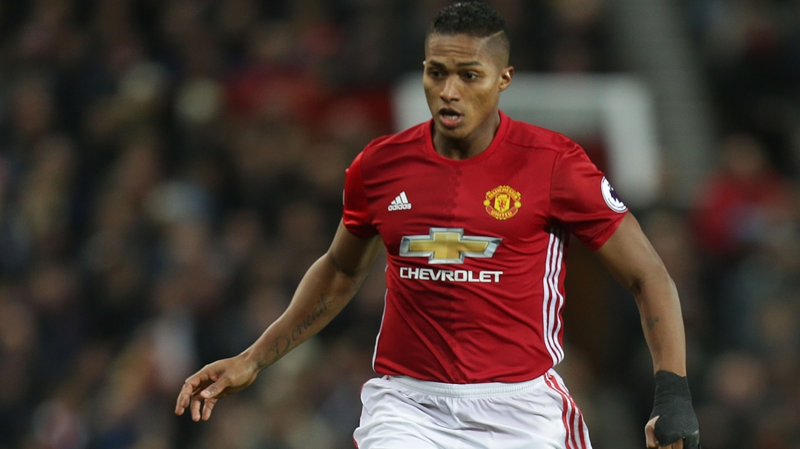
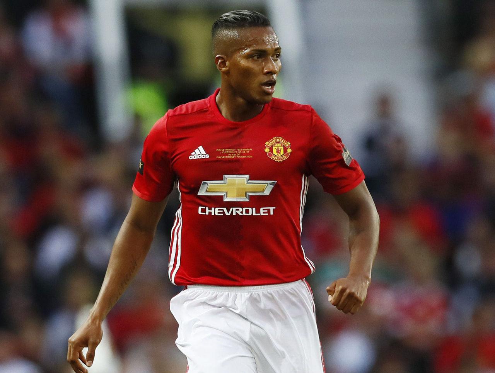

Match & Player news
 10/12/2016 10:24, Report by Ivan Spasov
Valencia's twin aims for Tottenham match
Antonio Valencia, Manchester United's Player of the Month for November, is itching to be involved in arguably December's biggest match for the club – at home to Premier League rivals Tottenham Hotspur on Sunday. Here's what the Ecuadorian attacking right-back had to say to MUTV on Friday afternoon as the Reds prepared for the weekend's action...
How important is it for us to turn the recent excellent performances in the Premier League into three points against one of our direct rivals? Absolutely, it’s very important that we go all out to pick up the three points against Tottenham. We’ve played very well. In every game we’ve played, we’ve performed well and we’ve played good football. But now we need to better that by winning and I think picking up a victory on Sunday will certainly give us a lot of confidence as we move further into the season and hopefully help us pick up more points in the future.
You were rested for the Europa League match in Ukraine, so how are you feeling ahead of the match – fit, fresh and eager to play? Yes, the manager gave me a few days’ rest and I’ve spent that time, while the lads were travelling, at home with my family, resting up, preparing and focusing on Sunday’s game. Let’s hope I’m given the chance to play and if selected, I can perform well and as I said, we can pick up those three points that are absolutely vital.
If you watched the Zorya Luhansk match from home, what was your opinion, and were you glad you didn't have to play on that difficult pitch? I could see the pitch was in pretty poor condition. So yeah, I didn’t play but it was great just sitting back and watching. I enjoyed the performance of the lads; I think they played really well and it was just a reflection of how we’ve played in the last 10 or so games. We have been playing well and I think that’s a good sign for the future as long as we can continue to take that good play into the games coming up.
As one of the Premier League's best attacking full-backs, do you admire the defenders at Tottenham who like to get forward – Kyle Walker on the right and Danny Rose on the left? Yes, obviously I’ve seen Spurs games and I appreciate they’re good players. I know they’ve got two very good full-backs and they’re having a good season. But let’s hope they’re not on their best form, they don’t have their best day, and that we can capitalise on that and hopefully get the chance to attack them and get forward ourselves.
Walker actually scored an own goal when Spurs came to Old Trafford last season and it was the only goal of the game. Do you expect another tight match on Sunday? It was a close game but I think we played well that day. What we’re really hoping for this time is to repeat that performance but maybe play even better. As a team we really are progressing well this season. I think we’re playing probably better than we were at the time of that game last season. Let’s hope that on Sunday afternoon we can continue this progress and get the victory that we all need.
United v Tottenham is a fixture that has a long history of producing some excellent football. As a player, do you feel a duty to maintain that tradition and produce another entertaining game for the fans on Sunday afternoon? I think we’ve always had a duty as Manchester United players in whatever game we’re playing in; it’s not only a duty to win trophies and titles but also to play well with entertaining football. That’s what we fight hard to do. We play hard and we try to play our absolute best in an entertaining manner so the fans leave the stadium and go home happy with a good result after seeing some good football.
Any game in the English Premier League is entertaining and that’s always our aim. What we have in our mindset and in our thoughts when we’re going into a game is that we try to win, get the three points, and play well at the same time. I’ll repeat: I think that’s what we’ve been doing in these last few games. I think we have been entertaining the fans and producing some good football. And again it’s all about continuing with that and trying to get the three points on Sunday.